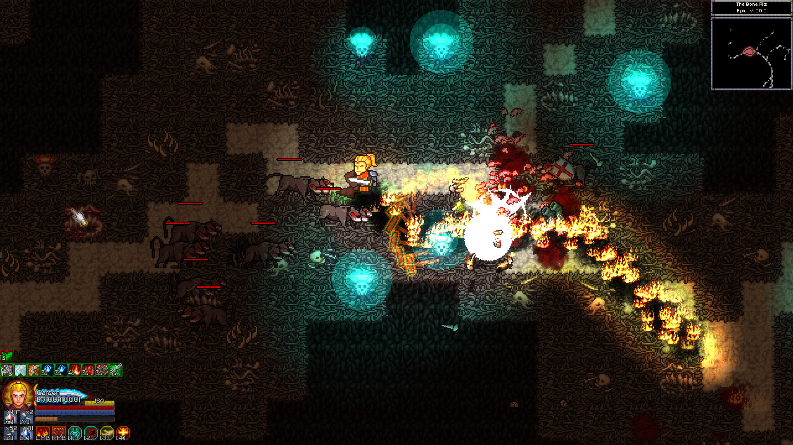
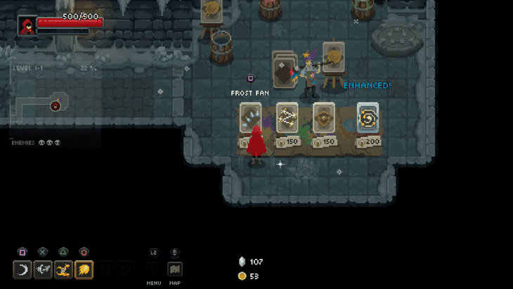

실제 게임 원본 이미지입니다. 이전의 큰 MMORPG 단축바와 엇갈린 원형 시안은 채택안에서 제외합니다. 장르보다 적은 스킬 수·2D 탑다운 시점·전투 시야를 기준으로 골랐습니다. 게임 코드는 수정하지 않았습니다.
좌하단에 HP·MP와 짧은 액티브 스킬 줄을 모읍니다. 우리 게임에는 이 구조에서 초상화·버프·물약·보조 메뉴를 제외하고, 체력·마나와 스킬 다섯 개만 남기는 방향을 제안합니다.

화면 왼쪽 위의 체력과 왼쪽 아래의 작은 스킬 슬롯을 확인할 수 있습니다. 많은 스킬을 표시하는 MMO UI보다 우리 게임의 적은 입력 수에 가까운 참고입니다.

Wizard of Legend 화면에는 우리 게임 요구와 같은 파란 MP바가 없습니다. 스킬 크기·정렬만 참고합니다. 작은 원본 이미지를 강제로 늘리지 않았습니다.
좌하단 작은 한 묶음: HP·MP 두 줄 → 그 아래 스킬 5개를 일렬 정렬. 큰 배경 판·초상화·버프 줄·아이템 슬롯은 추가하지 않습니다. 단축키만 남기고 쿨타임은 요청한 테두리 충전으로 표시합니다. 실제 스킬 동작·수치·MP 코어는 변경하지 않습니다.
이것은 원본 화면을 본 뒤 제안한 우리 게임용 단순화입니다. 두 게임의 HUD 전체나 장식을 그대로 복제하자는 뜻은 아닙니다. 현재 게임의 거절된 HUD 코드는 아직 그대로이며, 새 배치 구현은 승인 후 진행합니다.